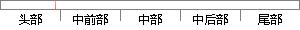

(3)影响生存时间因素分析，通过建立模型判断保护因素和不利因素，以及因素作用大小，常用Cox比例风险回归模型（Cox Proportional Hazards Model）。
片段位置图

相似结果|
相似片段 1：同非参数法一样，半参数法不对生存时间的分布做特殊要求，仅通过建立一个模型来研究生存时间的统计规律，分析生存时间的众多影响因素。1）Cox比例风险模型(Proportional Hazard
|
※ 片段修改建议 ※
近似词参考：- 生存：保存 糊口生涯 生活 生计
- 时间：时候
- 因素：身分
- 分析：阐发 阐明 剖析
- 通过：经由过程
- 建立：成立 创立 创设 建树 确立 设立建设 竖立 创建 树立
- 模型：模子
- 判断：判定 果断
- 保护：庇护 护卫 回护 珍爱 掩护 维护
- 因素：身分
- 以及：和
- 因素：身分
- 作用：感化
- 大小：巨细
- 常用：经常使用
- 风险：危害
- 模型：模子
系统自动生成语句：(3)影响保存时候身分阐发，经由过程成立模子判定庇护身分和不利身分，和身分感化巨细，经常使用Cox比例危害回归模子（Cox Proportional Hazards Model）。
注：本片段修改建议为系统自动生成，仅供参考。